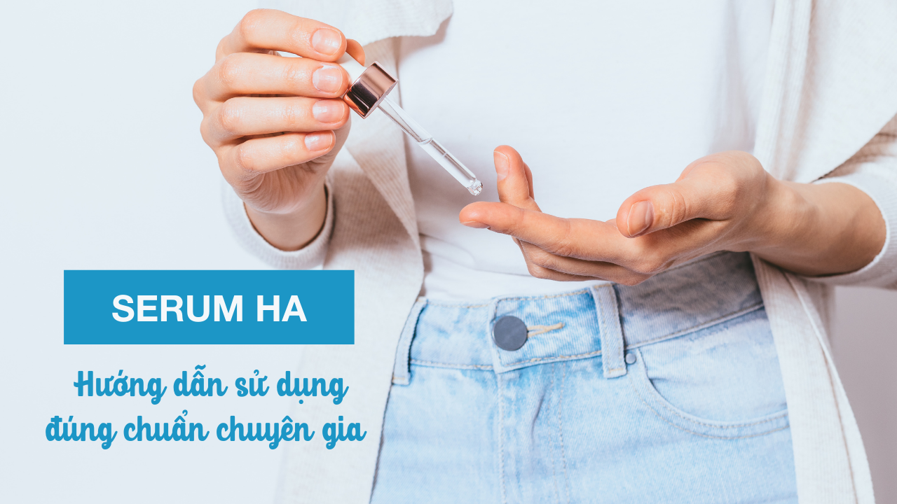

Nằm lòng cách sử dụng serum HA đúng chuẩn chuyên gia

Serum HA hiện nay đã là 1 cái tên quen thuộc đối với chị em trong giới làm đẹp. Nhưng để sử dụng đúng cách serum Hyaluronic Acid thật không đơn giản như chị em vẫn tưởng. Bởi vì nếu không dùng đúng cách sẽ dẫn đến tình trạng hút ẩm ngược, khiến da trở nên khô hơn. Nhưng nếu sử dụng đúng cách, làn da của mình sẽ được cung cấp đủ độ ẩm, căng mướt, đem lại sự tươi trẻ đôi mươi. Mời các bạn tìm hiểu cùng Skinavis trong bài viết dưới đây nhé!
HYALURONIC ACID LÀ GÌ?
Hyaluronic acid (HA) là phân tử đường dạng gel với tên khoa học là Polysaccharide và có khối lượng phân tử nằm trong khoảng 600.000 đến 1.000.000 đơn vị Dalton. Vì cấu trúc hoá học như thế, cho nên một 1 gam phân tử HA có thể đến 6 lít nước. Nói một cách dễ hiểu, HA hoạt động như một miếng bọt biển hút độ ẩm. Phân tử HA sẽ hút độ ẩm từ nơi có độ ẩm cao sang nơi thấp hơn.
CÁCH DÙNG HYALURONIC ACID
1. DÙNG TRÊN LÀN DA ẨM
Vì đặc tính hút ẩm từ môi trường ẩm sang khô nên cách dùng Hyaluronic Acid trên da ẩm sẽ phát huy tối đa công dụng của sản phẩm. Nếu thoa trên da khô dễ dẫn đến tình trạng da rát, đỏ, nóng hơn vì phải hút nước.HA rất dễ xảy ra tình trạng bốc hơi, từ đó hút ngược độ ẩm trên da khiến da mất nước. Ngoài ra, bạn còn có thể xịt lớp xịt khoáng lên da trước khi dùng HA để đảm bảo rằng các phân tử HA có đủ độ ẩm cung cấp cho da bạn.
2. SỬ DỤNG TRƯỚC KHI ĐẮP MẶT NẠ GIẤY
Vì đặc tính hút ẩm nên cách dùng Hyaluronic Acid tốt nhất sẽ là trước khi đắp mặt nạ giấy, lotion mask, hay 7 bước toner. Các dưỡng chất, độ ẩm của mặt nạ giấy, lotion mask và 7 bước toner sẽ được các phân tử HA hấp thụ tối đa giúp làn da căng bóng, rạng rỡ.
3. SỬ DỤNG VỚI MÁY TẠO ĐỘ ẨM
Phân tử HA sẽ hấp thụ độ ẩm từ môi trường ẩm sang khô, vì vậy nếu môi trường không đủ ẩm sẽ dễ xảy ra tình trạng hút ẩm ngược. Nói cách khác, hút ẩm ngược sẽ khiến độ ẩm trong da bốc hơi ra ngoài không khí, khiến da trở nên khô ráp, dễ lão hóa hơn.
4. SỬ DỤNG KEM KHÓA ẨM.
Nhiều chị em nghĩ chỉ cần bôi HA là đã đủ ẩm rồi nên không bôi thêm lotion hay kem dưỡng nào phía sau, hoặc đợi 10-15 phút mới bôi. Vì đặc tính dễ bốc hơi, nên cách dùng Serum Hyaluronic Acid của Skinavis hiệu quả nhất là nên dùng với các kem khóa ẩm cụ thể là kem khóa ẩm Skinavis Moisturizer. Đây là điều kiện bắt buộc khi sử dụng HA, nếu bạn không muốn gặp tình trạng càng dùng nhiều nhưng da lại càng xấu. Khi ấy HA đã bị bốc hơi kha khá rồi, hiệu quả hoạt động trên da cũng kém đi.
Hyaluronic Acid là một chất cấp ẩm phù hợp với mọi loại da, từ da khô đến da dầu. Bởi lẽ, HA sẽ hút độ ẩm từ không khí, giúp các cô nàng da khô sở hữu làn da căng mọng ngậm nước. Đối với các bạn da dầu, HA không hề gây bí tắc lỗ chân lông, ngược lại khi da được cung cấp đủ độ ẩm sẽ giảm thiểu được lượng dầu tiết ra..